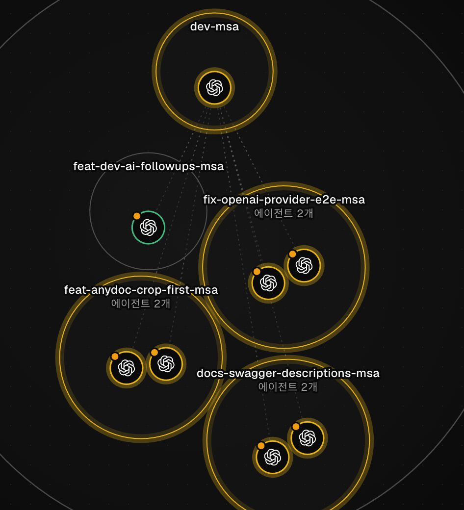

01 Background
The MSA migration had to be done within a week so we could deploy on schedule and get feedback on the new structure. The features were already built, so moving them meant too many changes to make by hand in time, and the work was split across several streams. I built a coding-agent loop so the work could keep going while I rested or slept. With about a week left before the MSA migration deadline, moving the AI features into the new service structure had split into several streams. Long single sessions lost track of the plan as context was summarized.
I judged that a late migration would delay both deployment and feedback, and increase rework on code that drifted from the plan. So the goal was to keep the schedule with the same team.
02 Loop design and decisions
Building an agent loop with separate roles
Problem Giving one session all the work blurred the plan and criteria as context was summarized. Agents then drifted from the plan, leaving commits missing or producing code that differed from it. Fixing that cost more time, so I set out to cut that waste.
Experiment and result Fixed the work plan and criteria in documents and split roles into implementation, review and integration review. Each branch had its own workspace with two agents running in parallel, and a coordinator agent judged dependencies and priority between tasks.
Decision Sessions could change and still continue from the same documents, so splitting long work across agents did not scatter its direction.
PR timeline: 8/9 → 8/13
Problem Tasks depended on each other, so opening everything at once risked conflicts and rework.
Experiment and result Opened #156–#159 on 8/9 and merged them on 8/10, ran #167, #169, #170 and others in parallel on 8/11, then fixed integration defects in #175 on 8/13. 16 PRs merged over 5 days.
Decision Opening the next batch only after prerequisite work merged kept conflicts down while still running in parallel.
Pre-merge review and merge decisions
Problem Merging agent-made changes as-is risked bringing defects in with them.
Experiment and result Merged only after the 13 required fixes from review were applied and regressions checked. For example, a defect where restoring a document returned its previous body was fixed before merge.
Decision Instead of writing the code myself, I made my role defining the pass criteria and deciding merges by them.
03 Improved processing flow

flowchart TD P[Work plan and criteria docs · me] --> C[Coordinator agent · dependencies and priority] C --> W1[Branch workspace · implementer + reviewer agents] C --> W2[Other branch workspaces · in parallel] W1 --> R[PR creation · integration review] W2 --> R R --> F[Required fixes applied · regression check] F --> J[Merge decision · me]
I set the plan and criteria; agents with separate implementer and reviewer roles worked in parallel per branch.
View Mermaid source
flowchart TD P[Work plan and criteria docs · me] --> C[Coordinator agent · dependencies and priority] C --> W1[Branch workspace · implementer + reviewer agents] C --> W2[Other branch workspaces · in parallel] W1 --> R[PR creation · integration review] W2 --> R R --> F[Required fixes applied · regression check] F --> J[Merge decision · me]
04 Results and lessons
16 PRs merged in 5 days · 13 required fixes applied before merge
Merged 16 PRs over 5 days, from August 9 to 13. The 13 required fixes raised in pre-merge review were applied and checked for regressions. One defect the review caught: restoring a document returned its previous body. The coding agents did the implementation; I designed the loop, wrote the work plan and criteria documents, reviewed results and made merge decisions.
I judged merges by criteria documents and review results rather than writing the code myself, so defects outside the review criteria can slip through. Refining the criteria documents remains ongoing work.